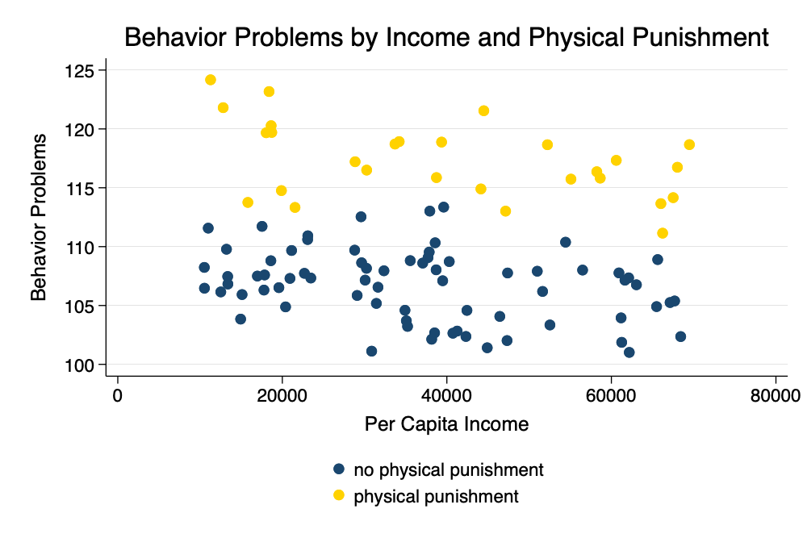
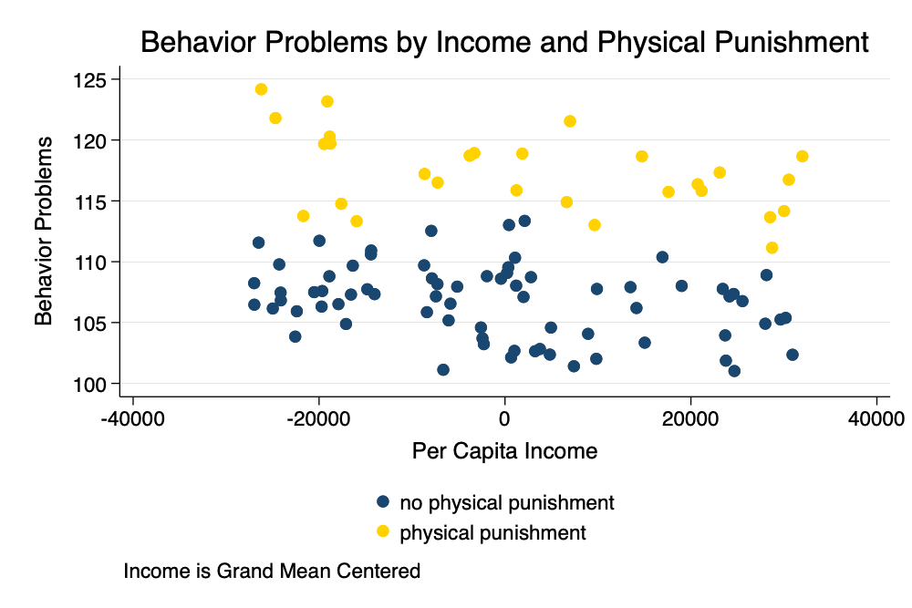

These notes represent a brief discussion of centering with cross sectional data. Since so much of my current work focuses on cross national work on parenting and child development, I use these ideas as my substantive example.
Consider a cross-national data set where we are attempting to understand predictors of behavior problems as a function of per capita income and parental use of physical punishment.
Simulate Some Data
. clear all
. set obs 100
Number of observations (_N) was 0, now 100.
. generate income = runiform(10000, 70000)
. generate physical_punishment = rbinomial(1,.3)
. generate country = int(_n/10) + 1
. generate e = rnormal(0,1) // individual error
. generate u = country - 5 // random intercept
. generate behavior_problems = 110 + -.0001 * income + 10 * physical_punishment + u + e // plausible regression relationship
. twoway (scatter behavior_problems income if physical_punishment ==0) ///
> (scatter behavior_problems income if physical_punishment == 1), ///
> legend(order(1 "no physical punishment" 2 "physical punishment") pos(6)) ///
> title("Behavior Problems by Income and Physical Punishment") ///
> xtitle("Per Capita Income") ///
> ytitle("Behavior Problems") ///
> scheme(michigan)
. graph export myscatter.png, width(1000) replace
file myscatter.png saved as PNG format

Scatterplot
Multilevel Model
. mixed behavior_problems income physical_punishment || country:
Performing EM optimization:
Performing gradient-based optimization:
Iteration 0: log likelihood = -167.55013
Iteration 1: log likelihood = -167.55013
Computing standard errors:
Mixed-effects ML regression Number of obs = 100
Group variable: country Number of groups = 11
Obs per group:
min = 1
avg = 9.1
max = 10
Wald chi2(2) = 2182.62
Log likelihood = -167.55013 Prob > chi2 = 0.0000
────────────────────┬────────────────────────────────────────────────────────────────
behavior_problems │ Coefficient Std. err. z P>|z| [95% conf. interval]
────────────────────┼────────────────────────────────────────────────────────────────
income │ -.0000978 6.48e-06 -15.08 0.000 -.0001105 -.0000851
physical_punishment │ 10.34499 .2307339 44.84 0.000 9.892763 10.79722
_cons │ 110.6282 .9461317 116.93 0.000 108.7738 112.4825
────────────────────┴────────────────────────────────────────────────────────────────
─────────────────────────────┬────────────────────────────────────────────────
Random-effects parameters │ Estimate Std. err. [95% conf. interval]
─────────────────────────────┼────────────────────────────────────────────────
country: Identity │
var(_cons) │ 8.70753 3.797228 3.704232 20.46877
─────────────────────────────┼────────────────────────────────────────────────
var(Residual) │ 1.050102 .1574455 .7827221 1.408819
─────────────────────────────┴────────────────────────────────────────────────
LR test vs. linear model: chibar2(01) = 171.82 Prob >= chibar2 = 0.0000
We note that -0.978 is the effect of every additional $10,000 of per capita income. 10.345 is the effect of physical punishment. Notably, for this handout, 110.628 is the level of behavior problems for a child who did not recieve physical punishment living in a family with $0income.
Grand Mean Centering
Grand mean centering helps us to have more meaningful intercepts of our continuous variables.
Essentially, we are going to create \(income_{\text{grand mean centered}} = income - \overline{income}\)
. egen m_income = mean(income) // grand mean of income
. generate c_income = income - m_income // grand mean centered income
. twoway (scatter behavior_problems c_income if physical_punishment ==0) ///
> (scatter behavior_problems c_income if physical_punishment == 1), ///
> legend(order(1 "no physical punishment" 2 "physical punishment") pos(6)) ///
> title("Behavior Problems by Income and Physical Punishment") ///
> caption("Income is Grand Mean Centered") ///
> xtitle("Per Capita Income") ///
> ytitle("Behavior Problems") ///
> scheme(michigan)
. graph export myscatter2.png, width(1000) replace
file myscatter2.png saved as PNG format

Scatterplot With Grand Mean Centering
In a graph, we see that grand mean centering has transformed the intercept so now the \(\beta_0\) term is the level of behavior problems for the average child who did not recieve physical punishment.
Group Mean Centering
In group mean centering, we are doing something slightly different. We are creating a mean for each group, which in this data is country: \(income_{\text{group mean centered}} = income - \overline{income_j}\), where \(j\) is the index for group or country.
. bysort country: egen m_g_income = mean(income) // GROUP mean of income
. generate c_g_income = income - m_g_income // GROUP mean centered income
. bysort country: egen m_g_physical_punishment = mean(physical_punishment) // GROUP mean of physical punishment
. generate c_g_physical_punishment = physical_punishment - m_g_physical_punishment // GROUP mean centered physical punishment
Multilevel Model
Interestingly, group mean centering has many implications. Here I focus on how employing different variables might provide conceptually or theoretically different results. For the sake of parismony, in the brief discussion below I focus on these conceptual or theoretical differences, and do not provide output. I use the quietly prefix to suppress output.
Covariate, and Group Mean
One parameterization of the multilevel model is to enter the covariate and its group level mean i.e. \(x_{ij}\) and \(\overline{x_j}\).
This first parameterization focuses on individual scores on covariates and their country level means.
What is the effect of income, country level mean income, physical punishment and country level mean of physical punishment on behavior problems?
. quietly: mixed behavior_problems income m_g_income physical_punishment m_g_physical_punishment || country:
Group Mean Centered Covariate, and Group Mean
A second, equally valid, but conceptually different parameterization of the multilevel model is to enter the covariate deviated from its group level mean and the group level mean i.e. \(x_{ij} - \overline{x_j}\) and \(\overline{x_j}\).
This second parameterization focuses on how individuals differ from their country level means, and country level means.
What is the effect of income deviated from its country level mean, country level mean income, physical punishment deviated from its country level punishment, and country level mean of physical punishment on behavior problems?